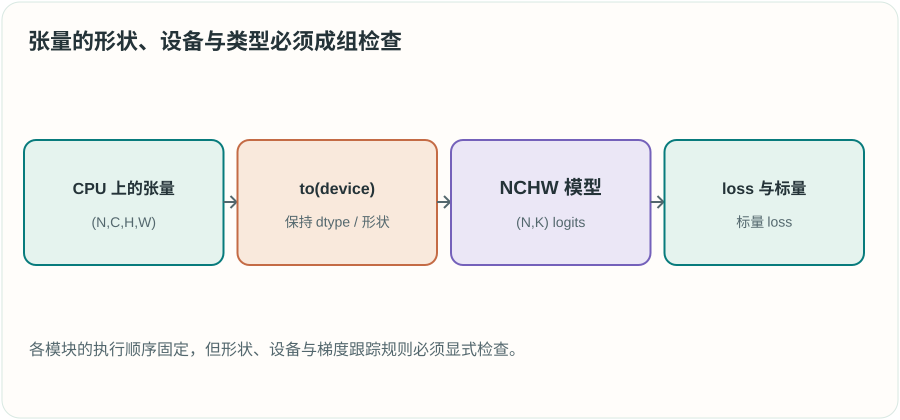
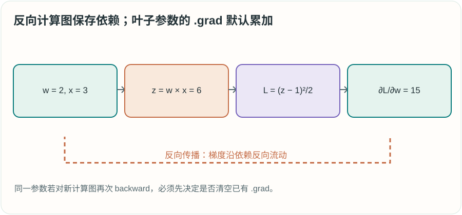
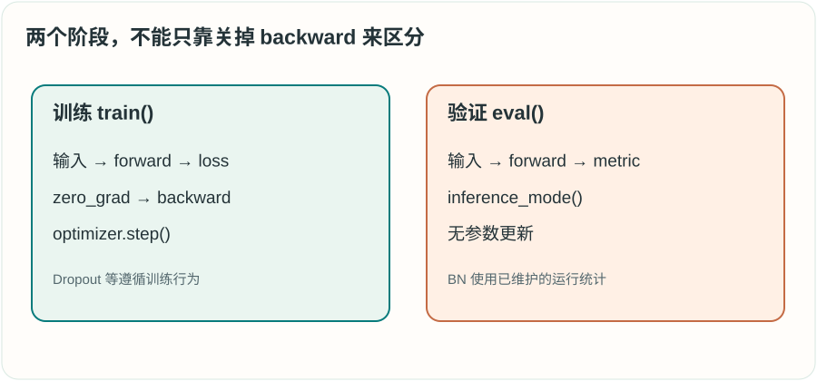

CHAPTER 06 · COMPUTATION
PyTorch：从张量到一次可信的训练
训练不是一句 loss.backward()。沿着张量 → 计算图 → 反向求导 → 参数更新 → 独立验证这条路径，弄清每一种状态改变发生在何处。
01 · 框架解决的不是公式，而是状态管理
要训练一个识别数字的模型，只有一条 y = f(x) 公式还不够。模型必须知道输入张量的形状和存储设备，自动保存哪些中间量需要求梯度，汇总每个 batch 的损失，更新可训练参数，并以与训练不同的方式执行验证。PyTorch 提供自动微分与可组合模块，但并不会自动保证实验设置正确。
这篇文章以 PyTorch 为例，不将框架流行程度作为技术论据。TensorFlow、JAX 也具备自动微分与加速能力，关键在于让张量布局、参数状态、随机性和评估语义可核查。

02 · autograd 记录的是依赖关系，不是梯度历史录像
对带有 requires_grad=True 的叶子张量，PyTorch 会记录可微算子所组成的计算图。反向执行 loss.backward() 时，按链式法则求得叶子参数梯度。.grad 在多次反向计算之间默认累加，这常是初学者发现“梯度为什么越来越大”的原因。

平方损失 L=(wx−t)²/2、x=3、w=2、t=1 时的解析梯度。
import torch
w = torch.tensor(2.0, requires_grad=True)
x, t = torch.tensor(3.0), torch.tensor(1.0)
loss = ((w * x - t) ** 2) / 2
loss.backward()
assert torch.isclose(w.grad, torch.tensor(15.0))
w.grad = None # 下一次优化迭代先清除旧梯度
loss2 = ((w * x - t) ** 2) / 2 # 构造新的图
loss2.backward()
assert torch.isclose(w.grad, torch.tensor(15.0))
print("dL/dw:", w.grad.item())w.grad = None 与优化器的 zero_grad(set_to_none=True) 都可用于避免非预期累积。执行两次反向需要新的图，除非明确使用 retain_graph=True；后者会增加内存成本，不应为了消除错误消息盲目开启。
03 · 一个 batch 的五个阶段及其顺序

一个标准 batch 通常按 optimizer.zero_grad() → forward → loss → backward → optimizer.step() 顺序运行。若准备做梯度累积，则不能在每个 microbatch 上清空；必须相应调整 loss 缩放与 optimizer.step 的频率，且对不等大小的 batch 需按样本数加权。
model.eval() 不会关闭 autograd。它改变 Dropout、BatchNorm 等模块的行为；torch.inference_mode() 不会自动切换模块到 eval 模式。两者的职责不同，验证时一般需要配合。
04 · Dataset、DataLoader、device 与随机性
Dataset.__getitem__ 定义如何取得一个样本，DataLoader 组合 batch，可通过 shuffle 和多进程加速读取。对 torchvision 图像变换，要明确数据在 PIL.Image、uint8 张量、范围 0–1 的浮点张量之间如何转换，才能避免把 255 当作 1。
模型与输入必须位于兼容设备上：model.to(device) 并不自动把后续构造的 batch 搬到设备。单次固定 manual_seed 能改善对比可复现性，但 GPU 算子、数据加载多进程与不同版本库仍可能引入非确定性；不要仅凭“设置了 seed”宣称 bitwise 可复现。
import torch
from torch.utils.data import TensorDataset, DataLoader
torch.manual_seed(7)
x = torch.randn(12, 3, 8, 8) # NCHW
y = torch.randint(0, 2, (12,))
loader = DataLoader(TensorDataset(x, y), batch_size=5, shuffle=False)
sizes = [batch_x.shape[0] for batch_x, _ in loader]
assert sizes == [5, 5, 2] # 最后的 batch 不一定满
print("batch sizes:", sizes)某些指标必须按真实样本数加权汇总，而不是直接平均每个 batch 的 accuracy；尤其最后一个 batch 小于其它 batch 时，简单求 batch 均值会出现偏差。
05 · CPU 上的最小端到端训练循环
这是一段不下载数据、不使用预训练权重的测试程序。它训练一个小型全连接分类器，将随机张量映射为两个类别；随机标签不代表有可学规律，因此只验证梯度与流程能正常工作，不报告模型性能。
import torch
from torch import nn
from torch.utils.data import DataLoader, TensorDataset
torch.manual_seed(3)
x = torch.randn(20, 4)
y = (x[:, 0] + x[:, 1] > 0).long() # 人工定义一个可学规则
loader = DataLoader(TensorDataset(x, y), batch_size=5, shuffle=True)
model = nn.Sequential(nn.Linear(4, 12), nn.ReLU(), nn.Linear(12, 2))
optim = torch.optim.SGD(model.parameters(), lr=0.05)
loss_fn = nn.CrossEntropyLoss()
model.train()
for batch_x, batch_y in loader:
optim.zero_grad(set_to_none=True)
logits = model(batch_x)
assert logits.shape == (batch_x.shape[0], 2)
loss = loss_fn(logits, batch_y)
loss.backward()
assert all(p.grad is not None for p in model.parameters())
optim.step()
model.eval()
with torch.inference_mode():
scores = model(x)
assert scores.shape == (20, 2)
print("single epoch completed; shape:", tuple(scores.shape))当交叉熵用于 (N,C) logits 与 (N,) 整数类标签时，无需事先做 softmax；损失内部已经包含数值稳定的对数归一化。如果真实任务的标签是多标签集合，就需要换目标函数与评估协议。
06 · 排错清单：哪些“能运行”的实验仍然错误？
| 现象 | 常见原因 | 可核查的方法 |
|---|---|---|
| 显存持续增加 | 保存了含计算图的 loss tensor | 记录 loss.item() 或 loss.detach() |
| 验证结果随机跳动 | 忘记 eval() / 随机增强未关闭 | 检查 Dropout、BN、数据管道 |
| 梯度意外翻倍 | 未清零已有 .grad | 比较首次和第二次 backward 前后的数值 |
| 设备不匹配 | 模型在 GPU、输入在 CPU | 打印 next(model.parameters()).device 与 x.device |
| 损失虽下降但指标失真 | 数据泄漏或错误汇总 | 按样本检查切分与统计权重 |
检查理解：使用 eval() 后，还需要禁用梯度吗？
通常需要。eval() 只切换模块运行行为；inference_mode() 或 no_grad() 才控制求导记录。不要混为一个动作。
官方资料与版本边界
示例使用当前 PyTorch 2.x 常见 API，CPU 即可执行；文中的人工数据只用于验证计算，不等于数据集基准结果。具体 API 以安装版本的文档为准。